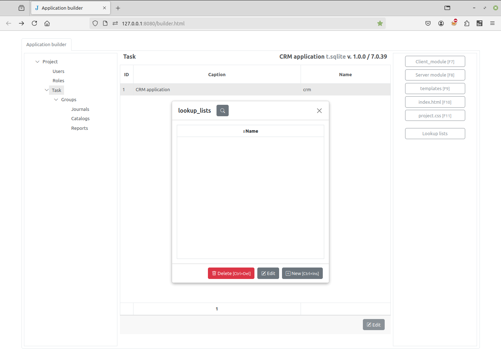
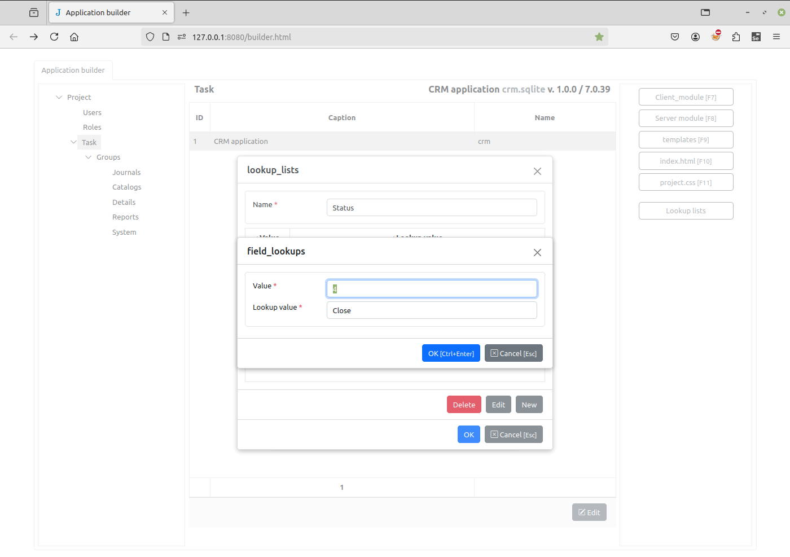
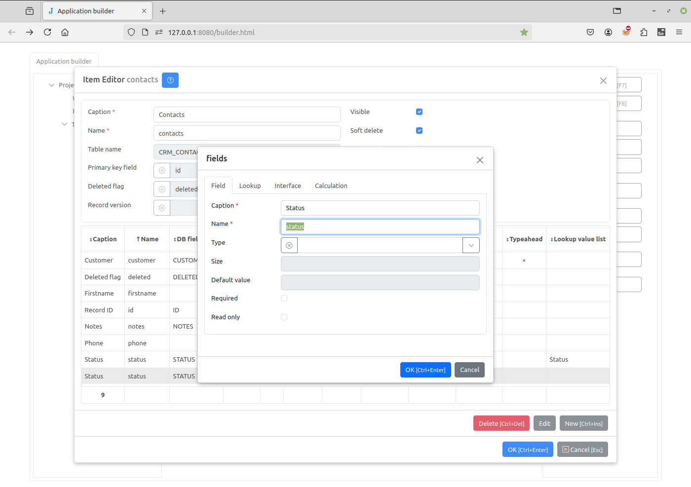
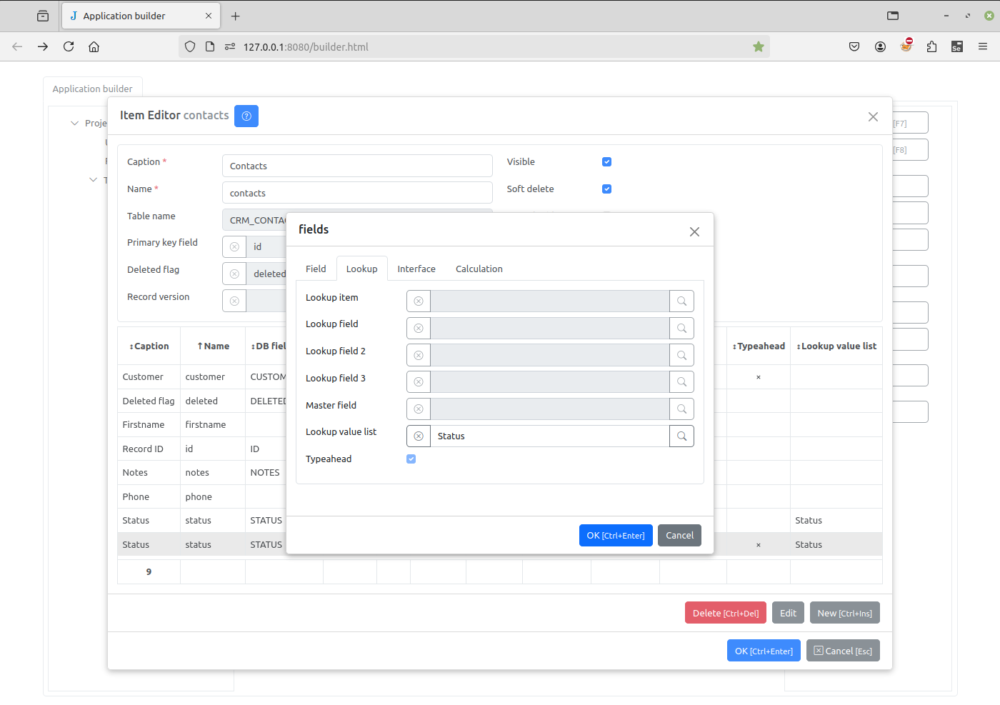
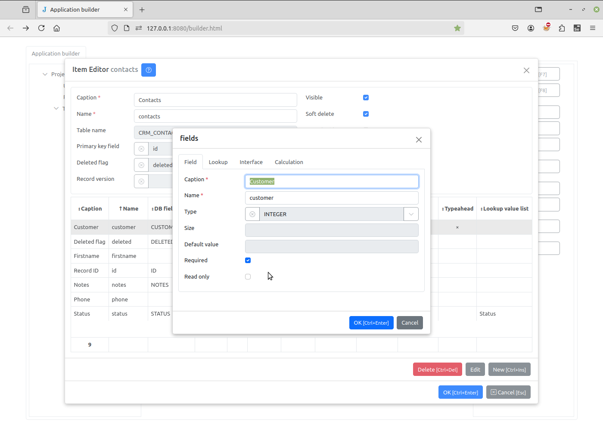
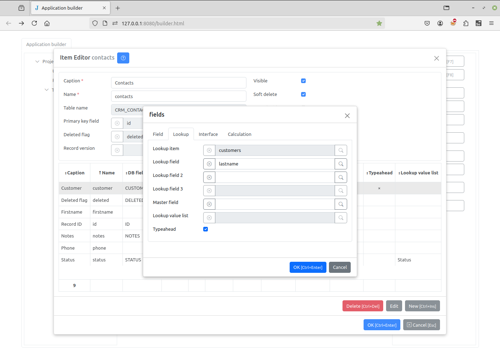
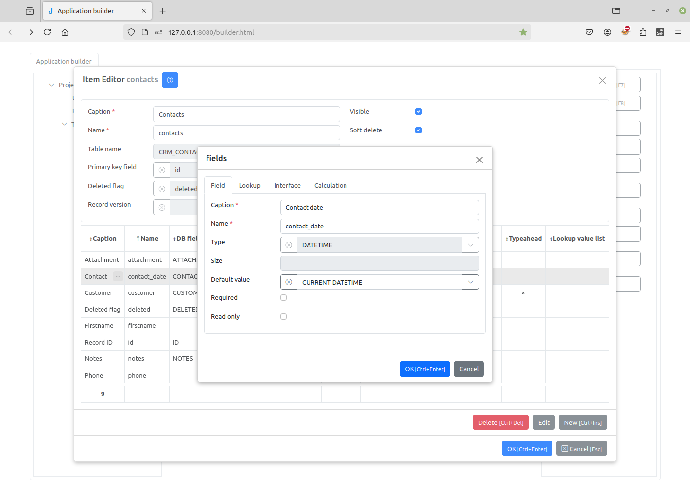
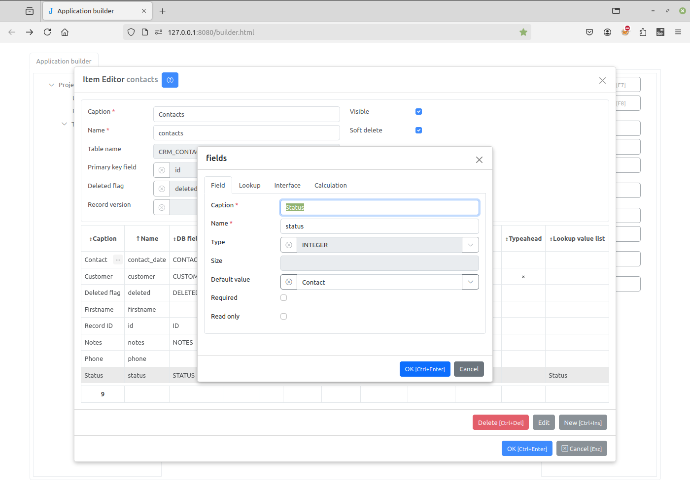

Lookup lists¶
Now we create a lookup List “Status”. Lookup lists are used to create “dropdown” field, with a limited set of possible values.
Select the “Task” node in the project tree and click the Lookup lists button.
{kind=link}
It is initially empty. Click the New button to create a new list. Specify the new lookup list name and add a list of integer-text pairs:
{kind=link}
Save the Lookup Lists with the OK button, then edit the “Contacts” journal to add the new “Status” field.
{kind=link}
As for lookup fields, set the caption and name and leave the type empty. Then go to the Lookup tab, and set the Lookup value list attribute to the “Status” lookup list:
{kind=link}
Finally, before saving, open the “Customer” field we created earlier, and set the Required attribute (in the “Field” tab) and the Typeahead attribute (in the “Lookup” tab). When the Typeahead is checked, autocompletion/typeahead is enabled for the lookup field.
 {kind=link}
{kind=link}
While we are here, set Default value of the “Contact date” field to “CURRENT DATETIME”, so that the date will be automatically initialised to the current date and time.
{kind=link}
We can likewise select a Default value for the “Status” field, by selecting a value in the drop-down lists.
{kind=link}